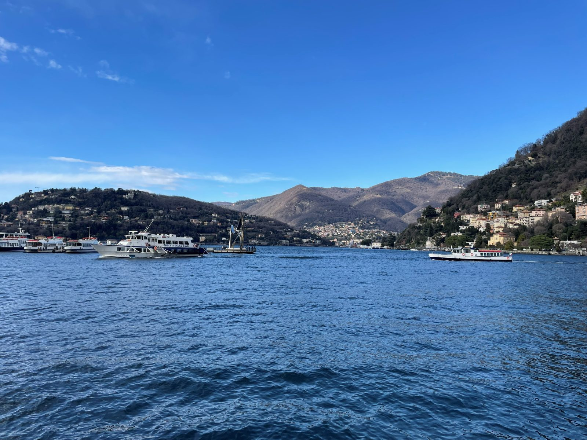
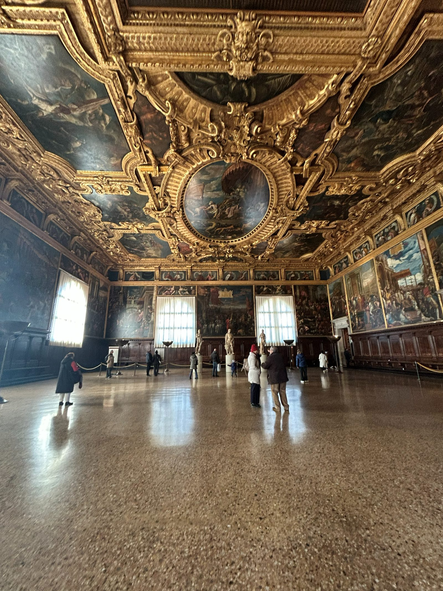
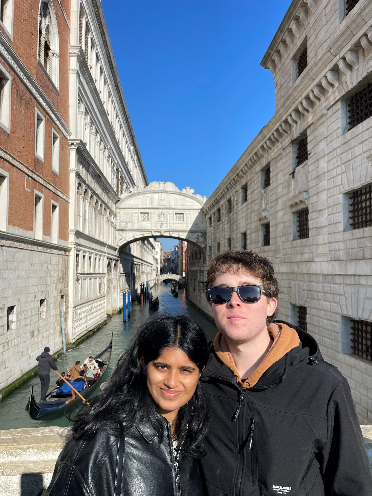
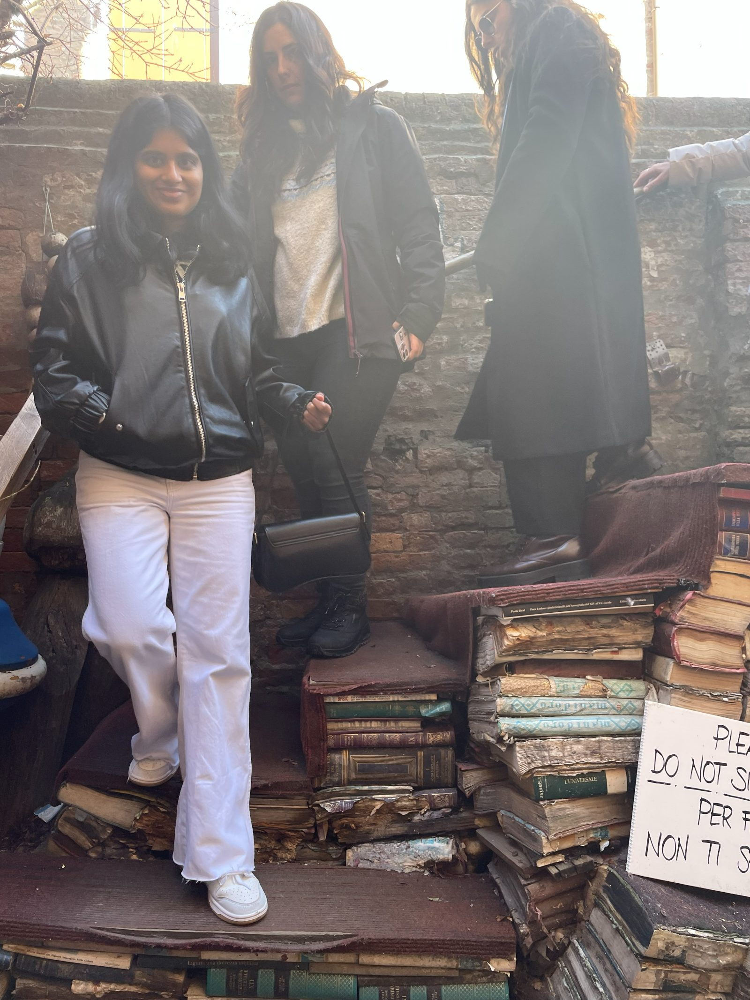
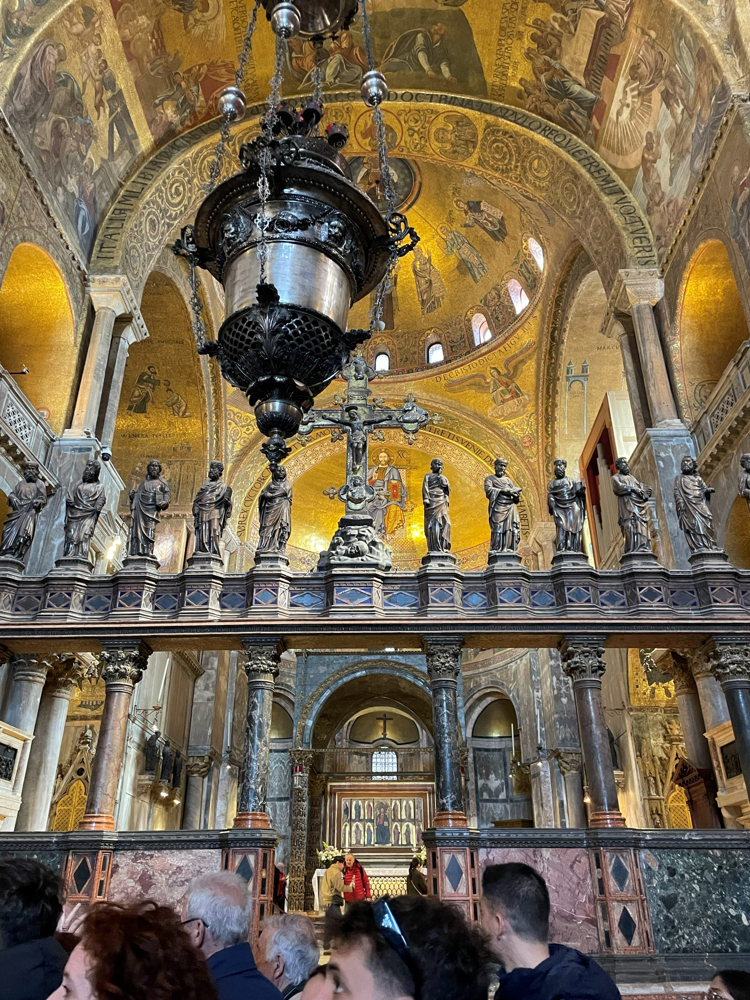
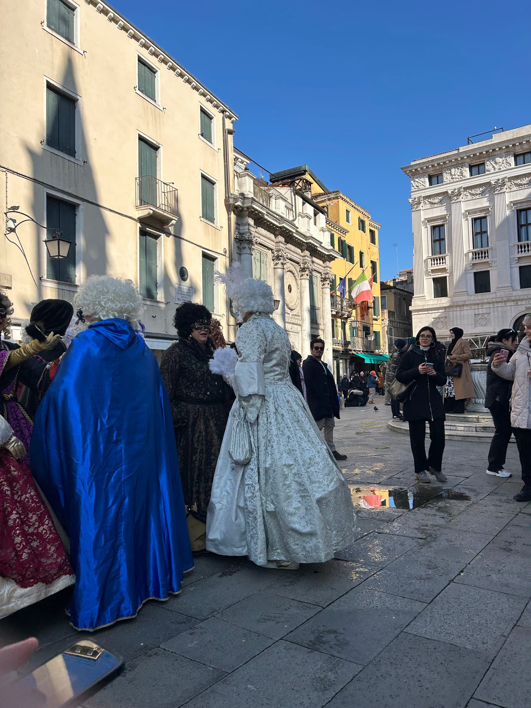
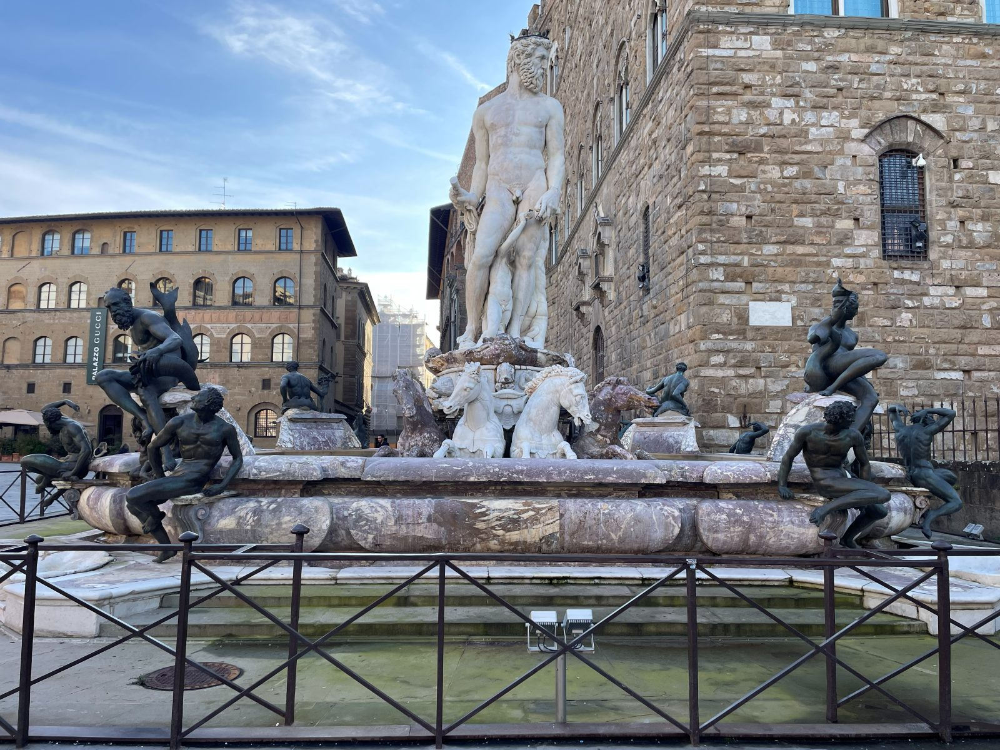
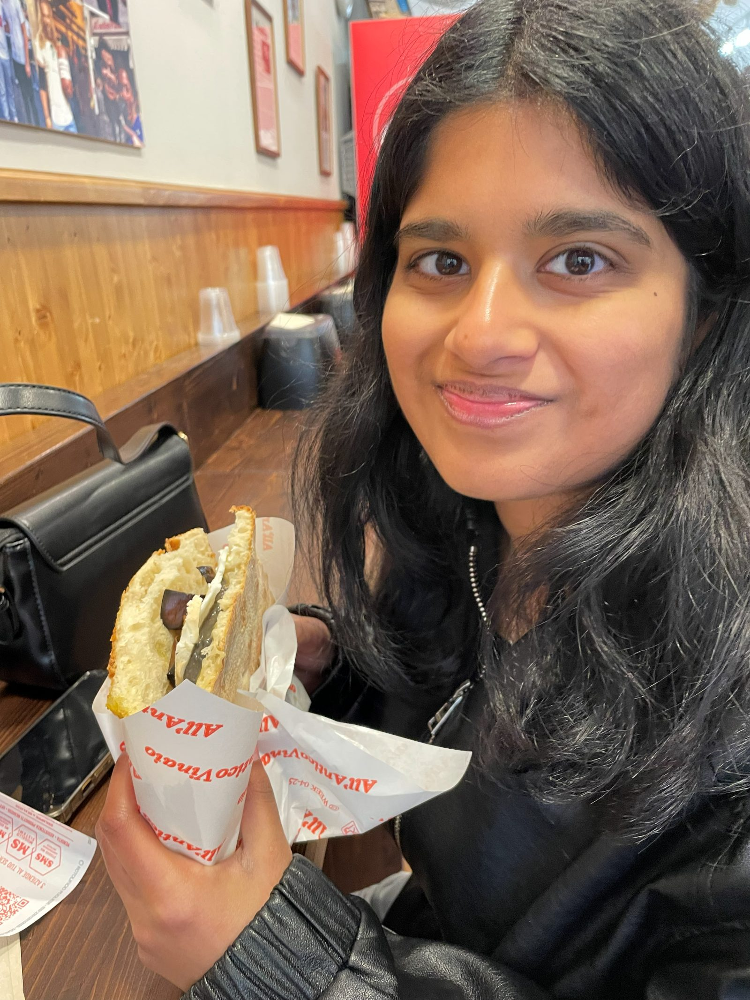
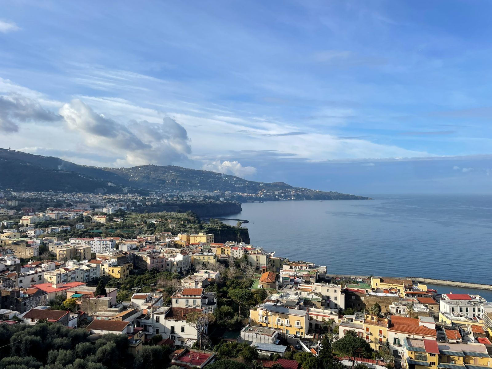
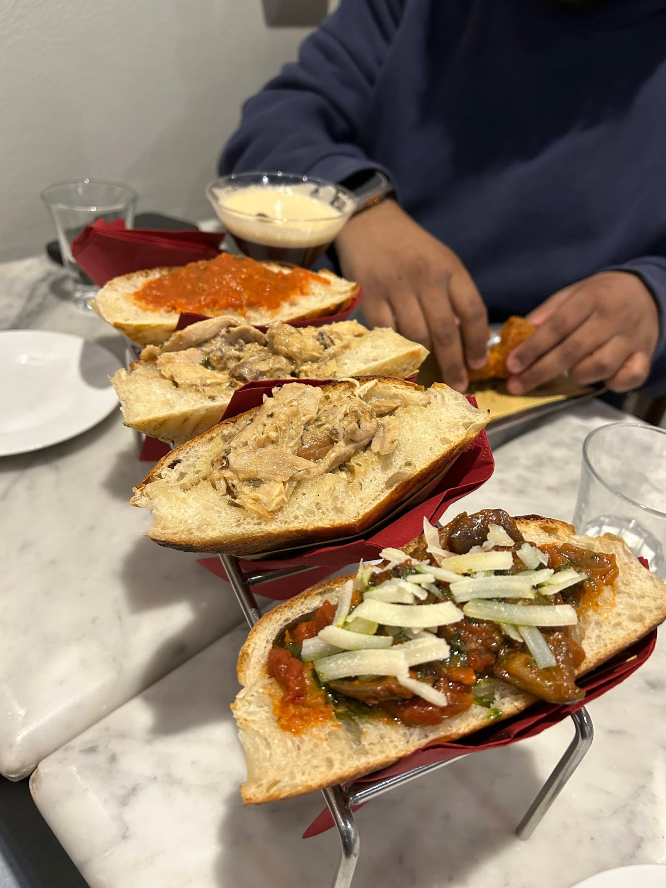

ITALY
Thursday (Travel)
- 8:05 pm flight never was formally delayed but didn't leave until 11
- We scanned boarding passes and everything and then just stood there at the gate before getting on a bus to the plane at another gate
- We got on the plane an hour late and sat there for over 2 hours before leaving
- Then we taxied around for 15 min before deicing
- Finally took off a little after 11 and got on the bus at 12:49
Friday (Milan and Lake Como)
- Got up and stored our luggage at Bounce
- Took the metro to San Siro and toured
-
1 / 2
- Really neat stadium, got to see it in Milan colors instead of Inter
- Tried to take the metro back to Milan Central Station but they were on strike
- We speedwalked 20 min and made it to our train to Como with a few minutes to spare
- Got to Como at 12:22 and went to buy ferry tickets

- They were sold out of all ferry tickets to Bellagio and Varenna so we booked a train with a stop in Monza
- Train takes 45 min longer but it was our best option
- Walked to lunch at Platea
- Very good pizzas but the bread was meh
- Got on the train to Monza at 2:40 and left soon after for Varenna
- Arrived in Varenna and got gelato by the lake
- Watched the sunset over the lake and wandered around for an hour until our train left for Milan
-
1 / 2
- Got to Milan and had to scrap seeing the Duomo because the transit was unreliable and we didn't have enough time to get there and back before our train
- Grabbed our luggage and a snack and left Milan at 8:45
- Got to the hotel in Venice a little at around 11:30 and went right to bed
- The room was very cold and it was red everywhere
Saturday (Venice)
- Got up at 7:45 and had the hotel breakfast before Doge's Palace

- Lots of historic offices, courts, prison cells, and paintings
- Went straight to Bridge of Sighs after

- Kind of underwhelming, we already saw it from the palace
- Ponte Dell'Academia
- Again, just a bridge
- Rialto Bridge
-
1 / 2
- Bigger busier bridge
- Got a few slices of pizza on the street for lunch
- Very good
- Libreria Acqua Alta

- Tiny book store crammed with people and books with stack of old books in the back outside
- Mahathi got Nutella tiramisu
- Liked it a lot
- Saw St Mark's Basilica

- Very spacious and big inside
- It was the beginning of their carnival so people were dressed up for it

- Took a ferry to Burano at 1:30
-
1 / 2
- Colorful houses
- Leaning tower
- Pear cinnamon gelato was unexpectedly very good
- Ferry back at 3:30
- Ate a snack at Bacaro Quebrado
- Cheap drinks and food
- We got fried cod, cheesy rice ball, and a tomato olive and feta ball
- Got our luggage and got on the train at 6:05
- Made it to Florence and 8:20
- Ate at central market hall
- Tortellini 4 formaggi was chewy it was meh
- Got to the hostel, showered, and went to bed
Sunday (Florence)
- The other guy in our room snored rly loud all night
- Got up at 7:20 and went to see David
-
1 / 2
- Cool sculptures and rly old art from the 1400s
- Saw Duomo and bell tower
-
1 / 2
- There was a bunch of construction so not an amazing sight
- Saw Fountain of Neptune and Palazzo Vecchio before going across Ponte Vecchio

- Cool area with lots of statues and a bridge with lots of shops on it
- Got sandwiches at All'Antico Vinaio when they opened

- Really good sandwiches
- I got one with a capicola, pepper cream, sheep cheese (pecorino) cream
- Mahathi got one with mushrooms and truffle sauce
- Got super busy right after we went
- Really good sandwiches
- Wandered around towards Bardini Garden
-
1 / 2
- Hiked up to the top and got a great view of the city
- Walked back down towards Boboli Gardens
-
1 / 2
- Bigger but more crowded and not as good views
- Went to early dinner at 3:15 at Aroma Indian
- Good paneer makhani, appetizers, and good value
- Grabbed a limoncello spritz and an aperol spritz for takeaway at a wine bar
- One of the bartenders yelled "Have a nice life" when we said we wanted it for to-go
- Got on a bus to watch the sunset and got hassled for not validating our tickets 10 seconds after boarding
- These girls got on with us and went to the ticket validation machine so we had to wait for them but immediately got yelled at when he looked at our ticket and said we didn't validate it when we got on
- I asked him how he didn't care to explain how he just grabbed the unvalidated ticket
- I asked if we were supposed to validate somewhere else he said no it is written very clearly here on your ticket to validate when you get on the bus and that the fine is 40 euros
- We then started to argue and tell them we just got on and were waiting to validate it once the girls moved out of the way
- One of the girls heard us and told the ticket guy something while pointing at us, not sure if she was trying to help or what
- The ticket guys kept just saying no when we were insisting we were waiting for the bus with them after they got off the last one and then boarded this one with them
- I eventually realized maybe my route on maps that shows the stop we got on would help and it did
- I showed the nice one and he signaled to the other one to let us go but they didn't give us our tickets back even though they were still valid for a while
- Watched the sunset in Piazzale Michelangelo
-
1 / 2
- Decent sunset, no sun just colors
- Met Robbie and Thiala who were very nice people
- Every picture Robbie takes of his girlfriend is wrong just like when I do
- She was studying abroad in Rome and he was from Glasgow
- Hopped on a bus got our luggage and swiftly walked to the station with 5 minutes to spare for our train
- It was actually delayed 20 minutes so we speedwalked for nothing
- Got to Naples at 10:30ish and went to the hostel
Monday (Naples)
- Woke up 7:40 and ate breakfast at the hostel before checking out
- Got to the bus right on time to do our day trip

- Passed through Al Capone's birthplace
- Got nice views of Mount Vesuvius and the islands near Naples
- First stop was at Sorrento
-
1 / 2
- We got to taste a ton of stuff from the area at Nimo something like limoncello, canteloupe liquor, pistachio/caramel/limoncello/coconut chocolates, lemon and melon candies, spicy pestos, cacio e pepe and truffle spreads, and alcohol filled gummy candies
- Loved the canteloupe/melon stuff and all the candies (bought some lemon candy)
- Walked towards the water and then just around town for a bit before leaving
- We got to taste a ton of stuff from the area at Nimo something like limoncello, canteloupe liquor, pistachio/caramel/limoncello/coconut chocolates, lemon and melon candies, spicy pestos, cacio e pepe and truffle spreads, and alcohol filled gummy candies
- Next stop was Positano
-
1 / 3
- Our favorite of the three, but very hilly
- We walked straight down to the beach and stayed there for a while
- Very rocky but calm
- Walked straight uphill for 20 minutes of basically just steep stairs to a sandwich shop
- It was all worth it, easily the most authentic Italian thing we did
- I got a Capri sandwich with ham, mozzarella, tomato, and pesto and we ate them on a bench halfway back down to the van
- Last stop was Amalfi
-
1 / 2
- Got off the bus and took a 15€ boat tour up and down the coast, cool views of all the houses, beaches, and cliffs
- Got gelato again and ate it at the beach
- It was way too cold to swim or anything (40-50 degrees) but it's still nice to be at the beach
- Headed back to Naples
- Naples sucks, not much to do, very sketchy, weird place
- We found a well rated pizza place and got a 6€ 12-14 inch pizza
- Really good margherita and peppers pizza
- Wandered around near Napoli Centrale until our train to Rome
- Checked into Meninger Hostel
- Very nice place, basically a 6-person hotel with two full bathrooms for the 6 of us
Tuesday (Rome)
- Got up around 7:45 and left around 8:40
- Walked to Spanish Steps, Trevi fountain, and the Pantheon
-
1 / 3
- Not super crowded on a Tuesday morning
- Went to the Vatican for St Peter's
-
1 / 4
- Short line
- Huge inside, the biggest church we've seen
- We were way ahead of schedule so instead of meeting Uma and Shrithik for lunch we did Piazza Venezia, Roman Forum, and Coliseum
-
1 / 2
- Piazza Venezia was closed for construction :(
- Forum and Coliseum were more crowded than the morning stuff but still really cool
- All of the buildings in that area are so old it's hard to tell what is and what isn't a "tourist attraction"
- Met Uma and Shrithik for lunch at around 12:30 at Trappizino

- Very good bread pocket things? Hard to describe or compare it
- Left at like 1:45 and got pasta finally but it was kinda like a fast food sort of place
- Decent cacio e pepe tonnarelli?
- Got Flor Gelato
- Very good authentic gelato
- Grabbed our bags and got on the train to the airport at 3:50
- Hung around the lounges for an hour before going to our gate to fly back to Berlin